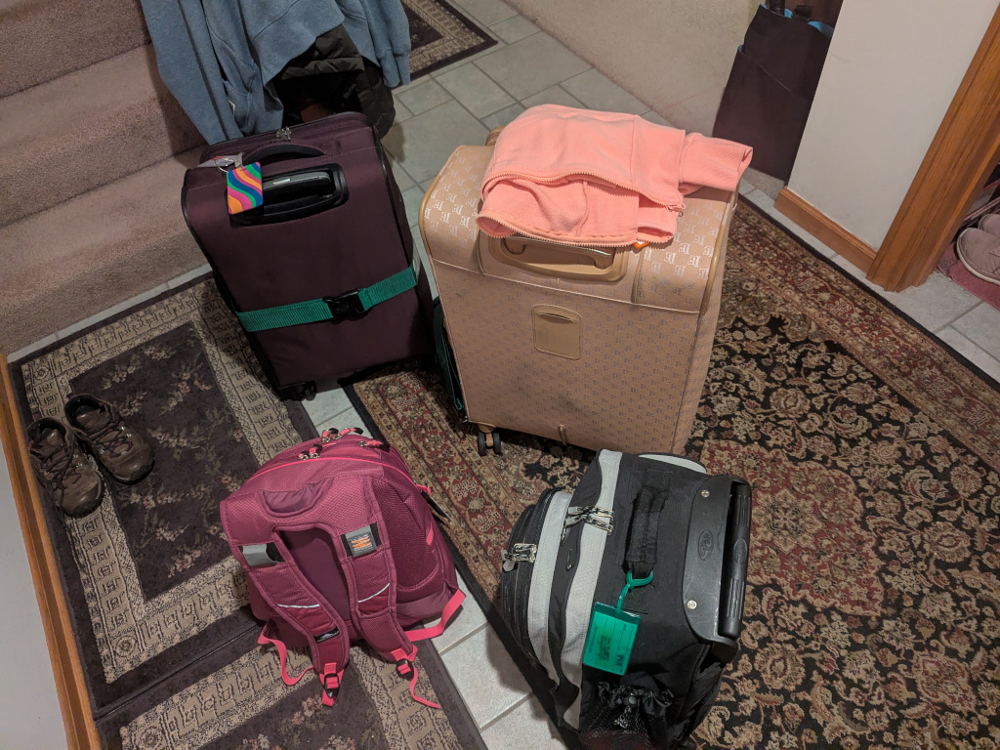
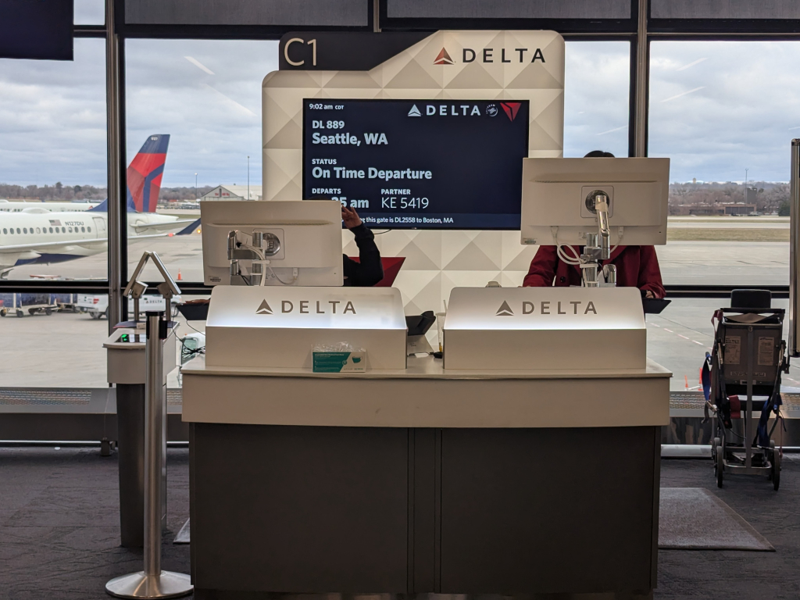
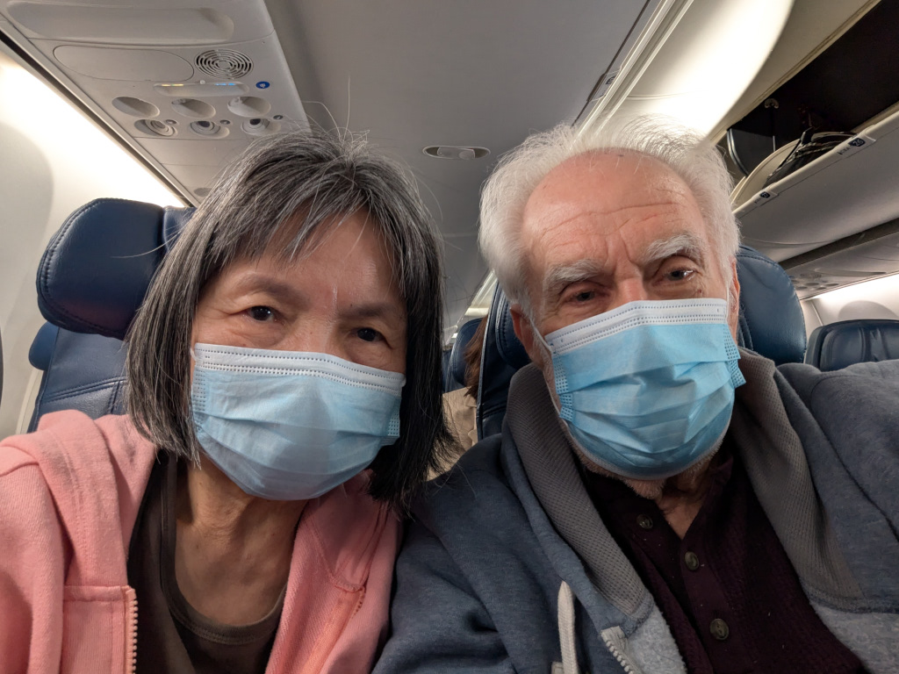
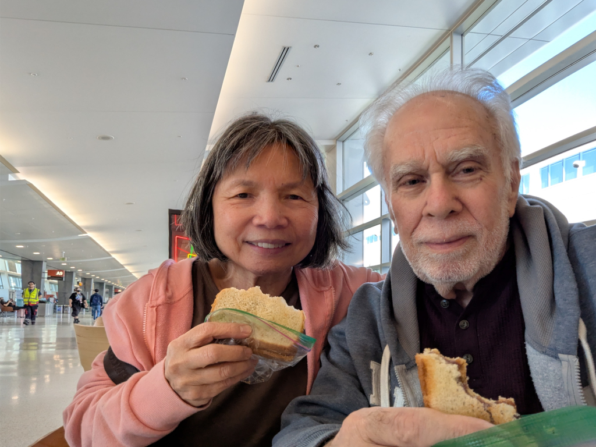
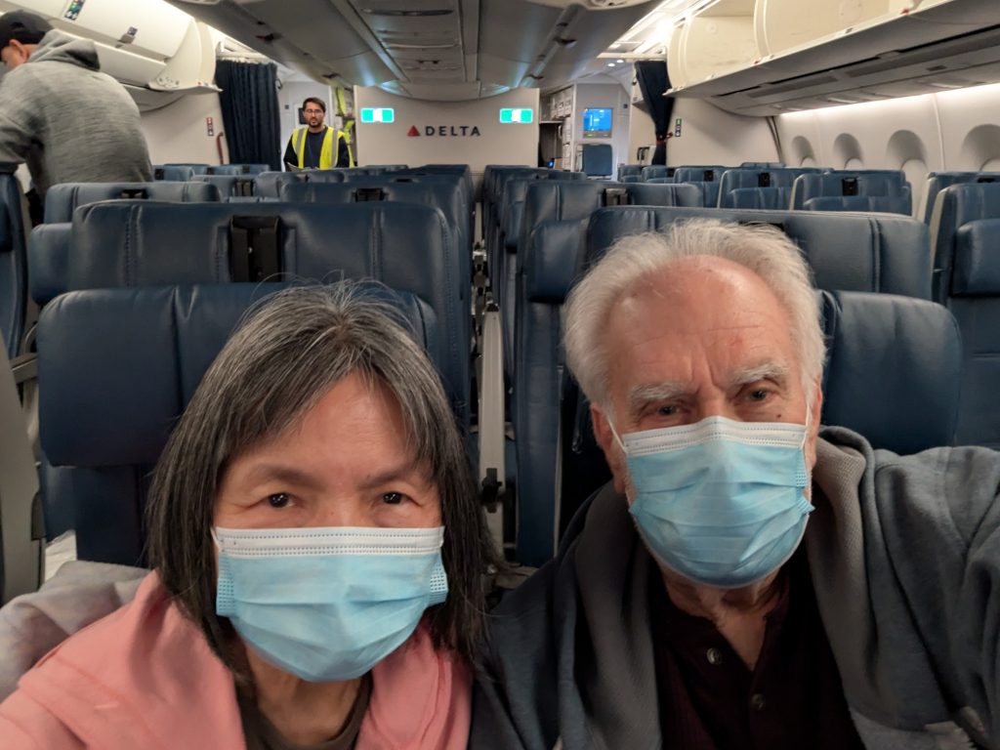
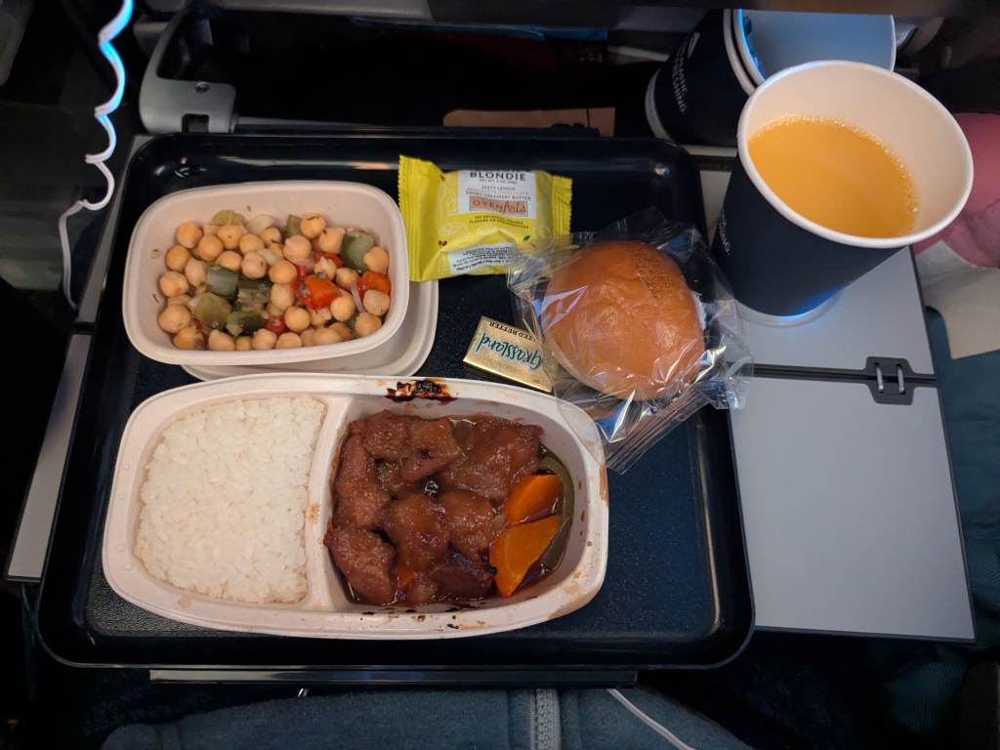
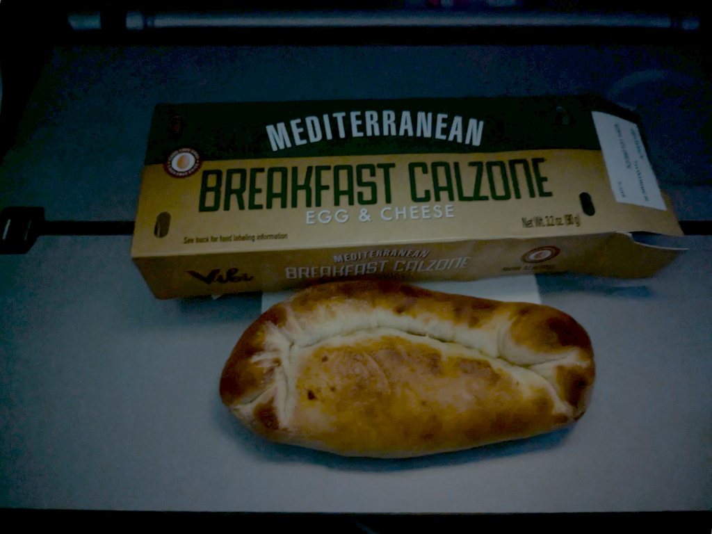
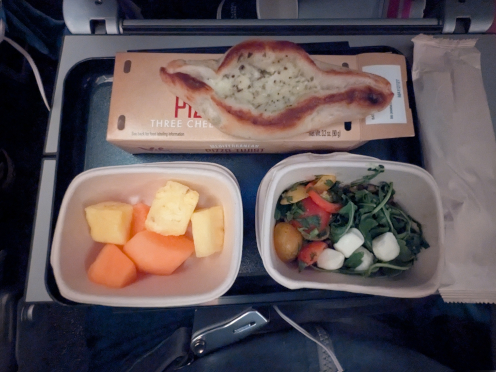

April 6-7, 2026
Back to Main
 Two checked bags and two carry-on backpacks are filled with not only the clothes we'll need for our 12 day trip, but some gifts for the family. Around 6:45 AM, we headed up to the EZ Air Park where we always leave our car and take their shuttle bus to the Minneapolis-St. Paul International Airport. From there, we headed off to catch our 10:25 flight to Seattle, the first stop on our way to TaiwannoteI always prefer to arrive at the airport early, even if it
means sitting at the gate for a while. It beats having to rush if we're late due to car problems, traffic, long security lines,
etc. .
 By 9:00, we were at the gate. Boarding was at 9:50, so we weren't too early. By 10:00, we were onboard and getting anxious - and excited - to go! The flight to Seattle took about 3½ hours and was pretty smooth and uneventfulnoteMei-O didn't get airsick, and my ears didn't plug up or explode. .
By 12:30, we were in the Seattle-Tacoma Airport where we'd have a 3½ layover.
 We always bring sandwiches with us when we fly; a PBJ for me and a PBH (peanut butter and honey) for Mei-O. We knew we were gonna get fed shortly after our departure, but we didn't know how long that would be, so we ate them at the gate while we waited. By 3:30, we were on the plane waiting to go. But then, ...we were advised that a cargo loader, a big vehicle that is used to load pallets of cargo onto the plane, had broken down, and it was blocking the closure of the cargo door. It actually took a couple of hours before they moved it out of the way, delaying our departure. Ugh. After reaching our cruising altitude, dinner was served. It wasn't that bad, not as bad as all the jokes about airplane food might've made it, and, in fact, was pretty satisfying. Shortly thereafter, the cabin lights were dimmed, and we settled in in the darkness for the long flight. I was very disappointed in the movie selection Delta had for us, but I managed to find some to pass the time, watching several which I had already seen. It made the time go quickly. About five hours later, we were served this egg and cheese "Breakfast Calzone" for breakfast. It wasn't very edible, the dough was chewy and rubbery and not especially tasty (but I ate it anyhow). We continued on.... When we were within two hours to go to our destination, we were served one more of these dough-wrapped cheesy things (it was called a "Pizza Twist"). It came with a salad and some fruit which weren't too bad. Having this final meal meant we were really close. |
{kind=link}
{kind=link}
{kind=link}
{kind=link}
{kind=link}